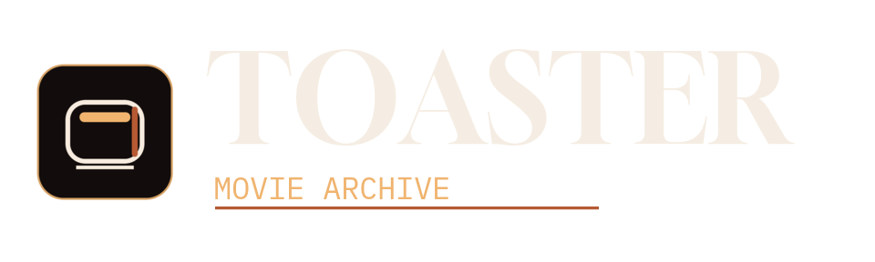
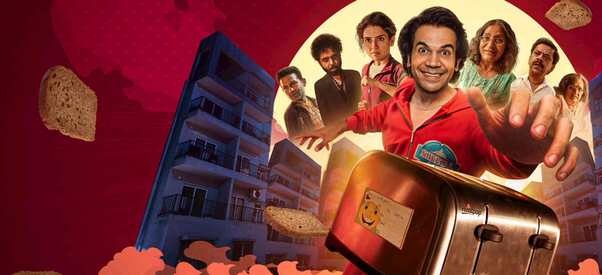
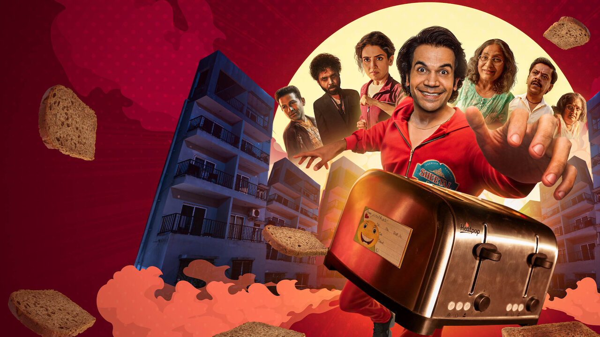
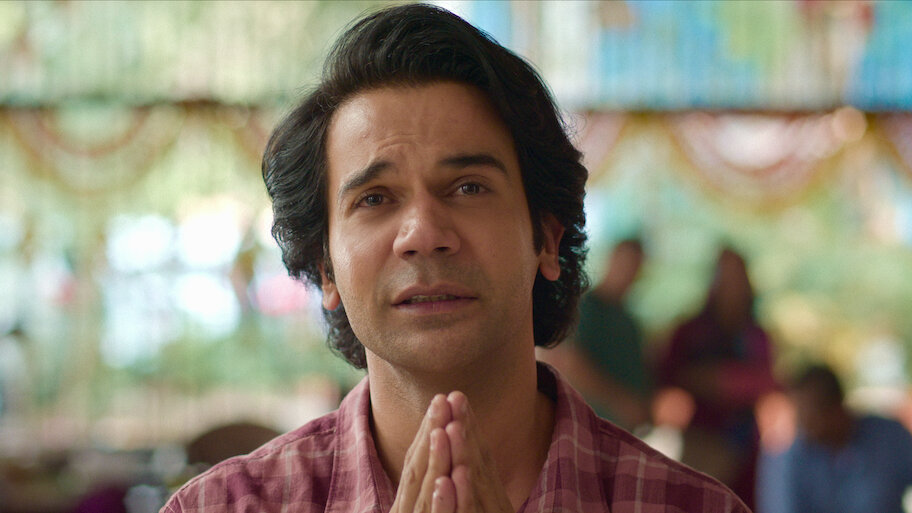
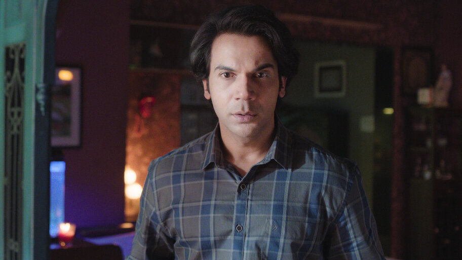

Rajkummar Rao
Lead role as Ramakant and producer credit.

Official Materials Archive
A gifted toaster turns into a fixation, then a murder-adjacent mess, in Netflix India's 2026 dark comedy thriller led by Rajkummar Rao and Sanya Malhotra.

Story Snapshot
Ramakant gives away an expensive toaster, then cannot let it go. The film follows that petty fixation as it expands into a knot of family collapse, suspicion, and absurd violence.
Netflix positions the title as a Hindi dark comedy thriller. Public title-page materials confirm a 2026 release, a 126-minute runtime, Hindi original audio, and subtitle support including English and Spanish.
Cast Notes
Lead role as Ramakant and producer credit.
Co-lead presence in the core domestic chaos of the story.
Supporting cast member highlighted in release coverage.
Featured in the ensemble surrounding the central mystery.
Part of the recognizable supporting line-up.
Supporting role connected to the investigative thread.
Archive Gallery
Showing 7 archive items

Backdrop
Netflix public title-page artwork with the core ensemble arranged for homepage display.
Open official sourceBackdrop
The strongest landscape composition from Netflix's public artwork stack.
Open official sourceBackdrop
A tighter platform-facing crop that holds the lead characters and the toaster motif closer together.
Open official source
Still
Public still surfaced by Netflix as part of the logged-out title page artwork set.
Open official source
Still
A second official still suitable for thumbnails, social previews, and editorial references.
Open official sourceTitle Art
The wider official wordmark as presented on the public Netflix listing.
Open official sourceTitle Art
A smaller official version used for tighter Netflix interface placements.
Open official sourceFAQ
It is a 2026 Hindi-language Netflix film built around a man obsessing over a toaster he wants back after a wedding unravels.
The site points directly to Netflix's official title page, which is the primary streaming destination referenced here.
No. This page is an independent editorial archive built around public official materials.
The archive intentionally limits itself to imagery surfaced on the public Netflix title page so the visual set stays official and consistent.
Credits & Sources
Netflix public title page for Toaster, including synopsis, title art, runtime, maturity label, and promotional images.
Netflix official pageSupporting release context comes from public film references used only for editorial framing and cast confirmation.
Wikipedia summaryThis site is an independent editorial archive for search users looking up toaster movie. It is not affiliated with Netflix, the film's producers, or IMDb.